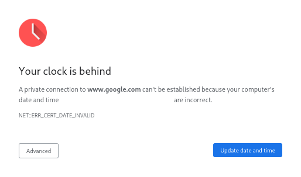

Some of them have! Although a lot haven't because the issue seems to have gotten less common, and realistically the better solution is to have people ensure their system time is synced. Generally the easiest option for servers utilizing the Bukkit of Forks is to have a plugin with an event listener which checks the disconnect reason and cancels out-of-order chat disconnects.
I've had to explain and help people with this issue a few times, and I have gotten fed up with doing so, so I created this page to do that for me, somewhat inspired by sites like nohello.net and dontasktoask.com. Anyone is free to link to this resource when needed.
If such a support page exists, then I haven't found it, which kinda serves to prove the general point that Mojang has done a bad job at communicating the changes made with 1.19. Considering Mojang's actions over the years its not really a supprise, especially given the fact that the game's playability is partly the result of community efforts (see OptiFine, Sodium, Paper, etc.), although I am fairly opinionated to take that with a grain of salt.
Chat messages are signed with a key to verify the sender, this key is only valid for 48 hours. As a result, the time at which a message was signed, sent, and received by the server is important, so the server checks to see that the time a message was sent makes sense. The argument could be made that currently the server is too strict with enforcing the time, however making it more relaxed means making it less secure. Minecraft is not the only application that cares about the time, if you desync your time enough, Chrome (and probably other browsers) will refuse to load pages as it can't verify that the sites SSL certificate is or is not expired.
You can help with this page by contributing to it on GitHub: github.com/Peter-Crawley/ChatOrder
You can contact me on Discord (PeterCrawley#1000 - 521031433972744193), you can find me on servers I frequent such as PaperMC and The Quilt Community.